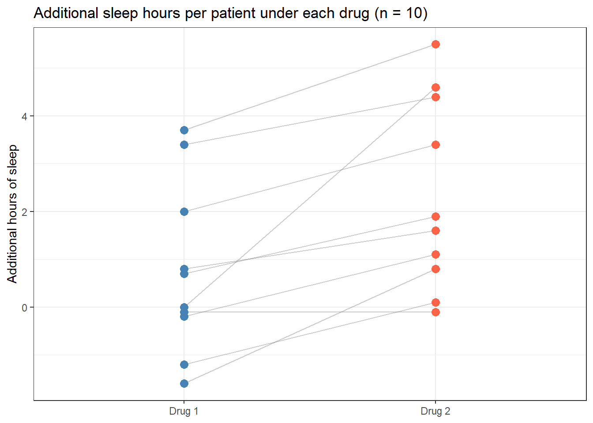
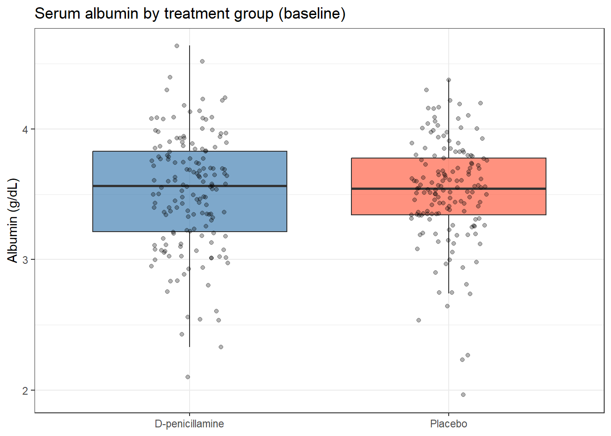

You measured haemoglobin before and after treatment in 30 patients. Or you measured body weight in 20 control mice and 20 treated mice. Or you want to know whether the mean platelet count in your patient group is below the clinical reference value. In each case, a t-test answers the same question: is this difference bigger than what I would expect from sampling variation alone?
This session is the first place you will apply the framework from Hypothesis Testing. If hypothesis testing is the logic, t-tests are one of its most common tools.
4.2 Learning Objectives
After completing this session you will be able to:
Choose the correct t-test variant for your study design (one-sample, two-sample, paired)
Understand why Welch’s t-test should be your default
Check the normality assumption and know when it matters
Run all three variants in R and read the output line by line
Report t-test results correctly in a manuscript
4.3 Background: The One Idea Behind All Three Tests
Before the three variants, here is the single idea that ties them all together. A t-test answers one question: is the difference I measured bigger than the noise? It takes the difference between means (the signal) and divides by the standard error (the noise — how much that difference would vary if you ran the study again on a new sample). That ratio is the t-statistic:
\[t = \frac{\text{difference between means}}{\text{standard error of that difference}} = \frac{\text{signal}}{\text{noise}}\]
A large \(|t|\) means the difference stands out against background variability — chance is an unlikely explanation. A small \(|t|\) means the difference could easily be noise. Everything below — which variant to pick, Welch versus Student, checking normality — is just this one idea adapted to your specific study design.
4.3.1 Choosing the right variant
Ask yourself two questions before running anything:
Am I comparing to a fixed value, or to another group? If comparing to a fixed value (a clinical threshold, a known reference), use a one-sample t-test. If comparing two groups, continue to question 2.
Are the two measurements on the same subjects, or on different subjects? If the same subjects appear in both groups (before/after, matched pairs, crossover trial), use a paired t-test. If different subjects are in each group, use a two-sample t-test.
Situation
Test
R syntax
Compare sample mean to a known value
One-sample
t.test(x, mu = value)
Compare means of two independent groups
Two-sample (Welch’s)
t.test(y ~ group, data = df)
Compare two measurements on the same subjects
Paired
t.test(x, y, paired = TRUE)
4.3.2 Welch’s vs Student’s: always use Welch’s
Welch’s t-test (R default: var.equal = FALSE) does not assume the two groups have equal variances. Student’s t-test does. Since you usually cannot know in advance whether variances are equal, Welch’s is safer. The cost in power is negligible when variances are equal, but the cost of using Student’s when they are not is inflated Type I error. There is no good reason to use var.equal = TRUE.
4.3.3 Normality: what the assumption actually means
The t-test does not require your raw data to be normally distributed. It requires the sampling distribution of the mean to be normal. By the Central Limit Theorem, this holds automatically for \(n \geq 30\) even with moderately skewed data. For small samples (\(n < 30\)) with obviously non-normal distributions, check a QQ-plot. If the data are heavily skewed or have extreme outliers, use a nonparametric test (see Nonparametric Tests).
ImportantThe one thing to remember
A t-test is signal ÷ noise. A small p-value means your signal is loud relative to the noise — it does not tell you the difference is large or clinically important. Always read the p-value alongside the effect size (the mean difference) and its 95% CI.
4.4 Example 1: Animal and Lab Data
4.4.1 Two-sample: does supplement type affect tooth growth?
The ToothGrowth dataset records the length of odontoblast cells in 60 guinea pigs given Vitamin C either as ascorbic acid (VC) or orange juice (OJ) at three doses. At 1 mg/day, does the delivery method change tooth-cell growth?
Before running any test, look at the data. As you study the plot below, focus on one thing: does the confidence interval for the difference between groups cross zero? That is the whole story.
The means differ by 1.41 standard errors. Negative because VC < OJ. Close to zero: the gap could easily be noise.
parameter (df = 15.36)
Welch’s degrees of freedom. Not a whole number — this is expected and correct.
p.value (0.18)
If there were truly no difference, we would see a gap this large 18% of the time from chance alone. Not significant.
conf.low / conf.high (−8.78 to 1.78)
The true difference could range from OJ being 8.78 mm better to VC being 1.78 mm better. The CI contains zero.
estimate1 / estimate2
OJ mean = 22.70 mm; VC mean = 16.77 mm. The raw difference is 5.93 mm — always report this, not just p.
The difference is not significant at 1 mg/day. At 0.5 mg/day it is — try it in Exercise 1.
4.4.2 Paired: do two sleep drugs differ?
The sleep dataset records additional hours of sleep for 10 patients under each of two drugs. Each patient received both drugs, making this a paired design. The key insight: some people simply sleep longer than others regardless of the drug. A two-sample test would treat that between-person variation as noise. The paired test removes it by focusing on each patient’s within-person difference.
sleepdat <- sleep %>%as_tibble() %>%rename(drug = group, extra_hours = extra) %>%mutate(drug =factor(drug, labels =c("Drug 1", "Drug 2")))sleepdat %>%ggplot(aes(x = drug, y = extra_hours)) +geom_line(aes(group = ID), alpha =0.4, colour ="grey50") +geom_point(aes(colour = drug), size =3) +scale_colour_manual(values =c("steelblue", "tomato")) +labs(title ="Additional sleep hours per patient under each drug (n = 10)",x =NULL,y ="Additional hours of sleep" ) +theme_bw() +theme(legend.position ="none")

The connecting lines show each patient’s trajectory between drugs. Most lines slope upward from Drug 1 to Drug 2. The paired test uses exactly this information — the consistent direction of change across patients.
To see exactly why using the paired test matters, run both on the same data and compare:
bind_rows(tidy(t.test(extra_hours ~ drug, data = sleepdat, var.equal =FALSE)) %>%mutate(test ="Two-sample (wrong for this design)"),tidy(res_sleep) %>%mutate(test ="Paired (correct)")) %>%select(test, estimate, conf.low, conf.high, p.value)
# A tibble: 2 × 5
test estimate conf.low conf.high p.value
<chr> <dbl> <dbl> <dbl> <dbl>
1 Two-sample (wrong for this design) -1.58 -3.37 0.205 0.0794
2 Paired (correct) 1.58 0.700 2.46 0.00283
The paired test gives a much smaller p-value because it strips out the between-patient variability that inflates the noise estimate in the two-sample test. The same data, the same effect size — but the right design choice makes the difference detectable.
4.5 Example 2: Clinical Data (PBC)
4.5.1 One-sample: is mean albumin below the clinical threshold?
The lower limit of normal serum albumin is 3.5 g/dL. PBC is a progressive liver disease that impairs the liver’s ability to synthesise albumin. We expect PBC patients to run low. The one-sample t-test tests whether the mean in our patients is significantly below the reference value.
Read across the row: estimate is the sample mean; statistic is the t-value; p.value is how often a sample this far from 3.5 would arise if the true population mean really were 3.5. The mean sits below 3.5 and the p-value is tiny — clear evidence that PBC patients have albumin below the normal threshold.
(broom::tidy() packs the output into a data frame rather than the default printed block. Both show the same numbers; tidy() is easier to work with in reports and pipelines.)
4.5.2 Two-sample: does albumin differ between treatment groups?
We already know from Hypothesis Testing that baseline albumin should not differ between randomised groups. Here we confirm it formally:
pbc_rand <- pbc %>%filter(!is.na(trt), !is.na(albumin))pbc_rand %>%ggplot(aes(x = trt, y = albumin, fill = trt)) +geom_boxplot(alpha =0.7, outlier.shape =NA) +geom_jitter(width =0.15, alpha =0.3, size =1.5) +scale_fill_manual(values =c("steelblue", "tomato")) +labs(title ="Serum albumin by treatment group (baseline)",x =NULL,y ="Albumin (g/dL)" ) +theme_bw() +theme(legend.position ="none")

tidy(t.test(albumin ~ trt, data = pbc_rand, var.equal =FALSE))
“Mean albumin in PBC patients was 3.43 g/dL (95% CI: 3.39–3.47), significantly below the clinical threshold of 3.5 g/dL (one-sample t-test: t(417) = −3.12, p = 0.002). There was no significant difference in albumin between the D-penicillamine and placebo groups at baseline, confirming comparable randomisation.”
Two tests, two different scientific questions, two complementary answers.
4.6 Checking Assumptions: QQ-plots
For small samples (\(n < 30\)), use a QQ-plot to check approximate normality. ToothGrowth has only 10 animals per group at each dose — exactly the situation where checking matters.
A QQ-plot compares the quantiles of your data against the quantiles of a theoretical normal distribution. If the points fall roughly along the diagonal line, normality is a reasonable assumption. What to watch for:
Heavy tails: points curve away from the line at both ends — suggests a distribution with more extreme values than normal
With \(n = 10\), points roughly following the line are sufficient — you cannot expect perfection from ten observations. If you see a systematic curve or extreme departures, consider a Wilcoxon test (Nonparametric Tests).
4.7 What Can Go Wrong
Using paired when data are independent, or vice versa
The paired t-test requires a genuine one-to-one link between observations. If you apply it to two independent groups, the degrees of freedom will be wrong and the p-value meaningless. If you apply a two-sample test to paired data, you throw away the within-subject information and lose statistical power. The design — not the software — determines which test is correct.
Relying on Shapiro-Wilk to decide whether to use a t-test
shapiro.test() is the wrong tool for this decision. With small samples (where normality matters most), it has low power and will miss real non-normality. With large samples (where normality matters least, because the CLT takes over), it will flag trivially small departures as “significant.” Use a QQ-plot and think about whether your outcome could plausibly come from a normal distribution.
Reporting only the p-value
“p = 0.03” tells the reader almost nothing. How big is the difference? In what direction? How precise is the estimate? Always report the mean difference, SD or SE for each group, and the 95% CI.
Forgetting that the default is Welch’s, not Student’s
t.test() in R uses var.equal = FALSE by default, which gives Welch’s test. This is the right choice. Do not override it with var.equal = TRUE unless you have a genuine scientific reason to assume equal variances — and there is rarely such a reason in biomedical research.
WarningCommon misinterpretations
“p = 0.04 means the difference is large” With 400 patients, even a 0.05 g/dL difference (clinically trivial) can produce p = 0.04. Always report the mean difference and CI.
“p = 0.07 means the groups are the same” It means the data are consistent with no difference at \(\alpha = 0.05\). With 20 patients, it may simply mean the study was underpowered. Never conclude “no difference” from a non-significant p-value alone.
“I used a one-sided test to get a smaller p-value” A one-sided test is only valid if you pre-specified the direction before collecting data. Using it because the data happened to go the right way is p-hacking.
“The paired t-test always gives a smaller p-value” Only when the within-subject measurements are correlated. If your data are genuinely independent, the paired test is simply wrong.
4.8 Exercises
4.8.1 Exercise 1 (Guided): Two-Sample Test at a Different Dose
Using ToothGrowth, test whether tooth length differs by supplement type at the 0.5 mg/day dose (where the difference looks larger than at 1 mg/day).
Filter to dose = 0.5, plot, then run a Welch’s two-sample t-test.
Report the result: t-statistic, df, p-value, 95% CI, and group means.
How does the conclusion change compared to the 1 mg/day result?
At 0.5 mg/day the difference is statistically significant and the CI excludes zero. The supplement delivery method matters more at lower doses. This illustrates a dose-interaction that would need to be explored with ANOVA if you want to formally test whether the supplement effect changes across doses.
4.8.2 Exercise 2 (Semi-guided): One-Sample Test for Bilirubin
The upper limit of normal for bilirubin is approximately 1.2 mg/dL.
Plot the bilirubin distribution in survival::pbc. Is it symmetric?
Log-transform bilirubin. Test whether mean log(bili) equals log(1.2).
Report the geometric mean (back-transform with exp()), the 95% CI, t-statistic, df, and p-value. Write one sentence of interpretation.
TipExercise 2: Solution
ggplot(pbc, aes(x = bili)) +geom_histogram(bins =30, fill ="steelblue", colour ="white") +labs(x ="Bilirubin (mg/dL)", y ="Count") +theme_bw()
res <-t.test(log(pbc$bili), mu =log(1.2))tidy(res)
Bilirubin is strongly right-skewed, so the log scale is appropriate. The geometric mean bilirubin in PBC patients is well above 1.2 mg/dL and the difference is highly significant (p < 0.001), consistent with cholestatic liver disease.
4.8.3 Exercise 3 (Open-ended)
Using a dataset from your own research, identify a comparison where a t-test is appropriate. Decide which variant (one-sample, two-sample, or paired) fits your design. Run the test, check assumptions with a QQ-plot, and write a complete Methods and Results paragraph as you would for a journal submission.
4.9 Comprehension Check
What is the difference between a one-sample, two-sample, and paired t-test? Give a concrete biomedical example for each.
Why is Welch’s t-test preferred over Student’s t-test in practice?
A QQ-plot shows points deviating from the diagonal at the upper tail. The sample size is n = 12. What should you do?
You run a two-sample t-test and get p = 0.04, 95% CI for the difference: (0.01 to 2.1 g/dL). Is this a convincing, informative result? What would you report?
A colleague says: “I ran Shapiro-Wilk and got p = 0.06, so the data are normal enough for a t-test.” What is wrong with this reasoning?
NoteAnswers
One-sample: compare a sample mean to a fixed reference value (e.g., “Is mean haemoglobin in my patients below 12 g/dL?”). Two-sample: compare means of two independent groups (e.g., “Does albumin differ between treated and untreated mice?”). Paired: compare two measurements on the same subjects (e.g., “Did blood pressure change from baseline to 6 weeks in the same patients?”).
Welch’s test does not assume equal group variances, making it more robust. The cost in statistical power when variances are equal is negligible. Using Student’s test when variances differ inflates the Type I error rate. Welch’s is the R default and should stay that way.
With n = 12 and visible non-normality, the sample is too small for the CLT to rescue you. Use a nonparametric Wilcoxon rank-sum test instead.
The result is statistically significant (p = 0.04) and the CI excludes zero, but the CI is very wide: the true difference could be as small as 0.01 g/dL (negligible) or as large as 2.1 g/dL (potentially important). A barely significant result with a wide CI tells you almost nothing about the size of the effect. Report both the p-value and the CI, and note that the estimate is imprecise.
Shapiro-Wilk with p = 0.06 does not mean the data are normal — it means non-normality was not detected at \(\alpha = 0.05\). With n = 12 the test has very low power; it would miss moderate non- normality routinely. Use a QQ-plot and domain knowledge to assess whether the normal distribution is a plausible model for your data.
4.10 How to Report
NoteReporting t-test Results
In a Methods section:
“Differences in [outcome] between [group A] and [group B] were compared using an independent-samples Welch’s t-test. A paired t-test was used for [paired outcome] because measurements were taken on the same subjects at two time points.”
In a Results section:
“[Outcome] was higher in [group A] (mean X.XX, SD Y.YY) than in [group B] (mean X.XX, SD Y.YY; t(df) = X.XX, p = .YYY, 95% CI for difference: L.LL to U.UU).”
Always include:
Means and SDs for both groups
Test statistic (t) and degrees of freedom (df)
Exact p-value (write p < 0.001 when very small; never p = 0.000)
95% CI for the mean difference
Whether the test was one- or two-sided (two-sided is standard)
Common reporting errors:
Reporting only “p < 0.05” without the actual value or the effect size
Omitting the 95% CI for the difference
Writing “mean ± SEM” in the text but calling it “mean ± SD”